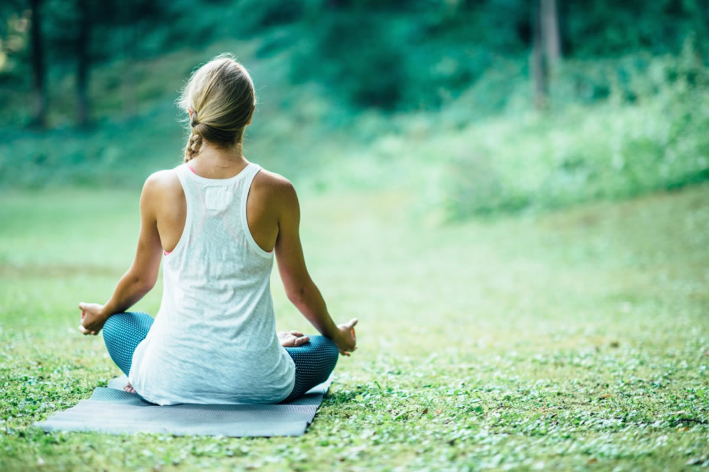
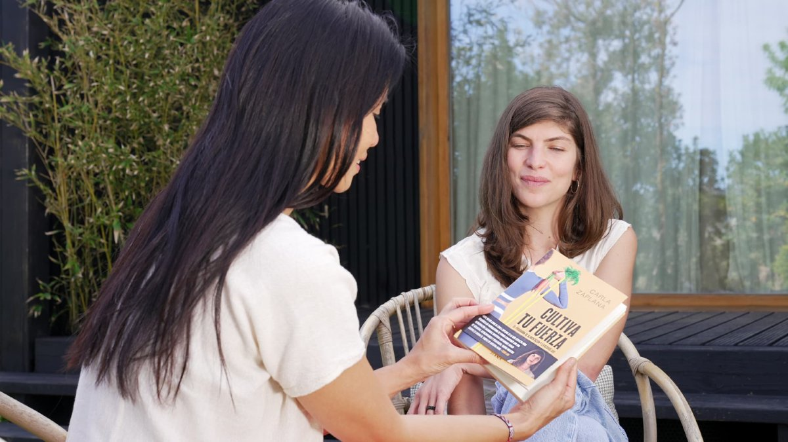
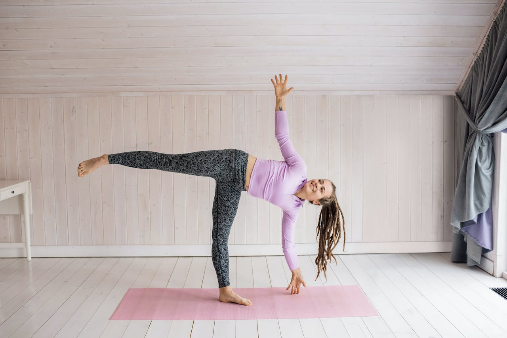
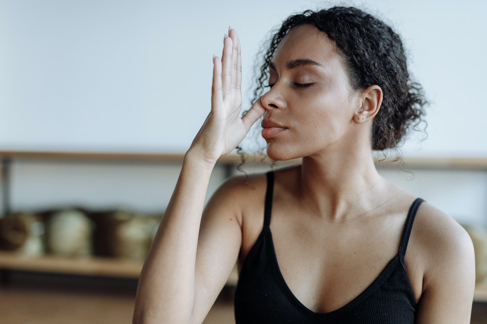

Conoce los Beneficios del Yoga: guía básica para principiantes
Un resumen de las ideas básicas para empezar a practicar yoga y
disfrutar de sus beneficios.

Más allá de las posturas físicas, el yoga es una filosofía de vida
que busca la unión entre cuerpo, mente y alma. En este artículo, te
contamos cuáles son los beneficios del yoga para el cuerpo y la
mente, ofreciéndote una guía básica especialmente diseñada para
principiantes...
Leer el artículo completo
Meditación en yoga: qué es y cómo practicarla para relajarse
La meditación en el yoga permite entrar en un estado de calma,
concentración y conexión con uno mismo.

Para ello es importante hacer una buena combinación entre la
postura, la respiración controlada y la atención plena. Hoy
profundizamos en el concepto de meditar y sus efectos, y te
explicamos cuáles son las mejores técnicas de meditación para
relajarse para practicarlas en casa. ¿Te interesa el tema a nivel
profesional?...
Leer elarticulo completo
Entrenamiento y alimentación para ganar fuerza y salud
Hace pocos años, el entrenamiento con peso o resistencia era casi
una exclusiva del público masculino.

Las mujeres centrábamos nuestro ejercicio físico en prácticas
aeróbicas o cardiovasculares, o bien de flexibilidad y movilidad. El
temor a que los pesos pudieran dañar nuestros huesos o
articulaciones, ...
Leer el artículo completo
Posturas de yoga
Asana es el nombre que reciben en sanscrito las posturas de yoga.

Todas ellas incorporan esta palabra en su denominación,
estableciendo de esta forma una nomenclatura propia del yoga. Aquí
te contamos cuáles son los músculos que se trabaja en cada una de
ellas, sus beneficios y variantes para que mejores tu técnica
rápidamente. Gracias a este conocimiento podrás adaptar tus sesiones
de yoga para lograr los objetivos específicos que quieras...
Leer el artículo completo
Nutrición y Yoga:
Descubre los beneficios de la dieta vegetariana y vegana
Descubre la conexión entre la nutrición y el yoga. Explora la
alimentación consciente, la dieta sátvica y cómo adoptar una dieta
vegetariana. Aprende sobre alternativas proteicas y la integración
de la alimentación vegana en la práctica del yoga. Este artículo es
tu guía esencial.
Leer el artículo completo
Pranayama
La práctica de la respiración consciente para la salud y el
bienestar

Descubre el poder de la respiración consciente con Pranayama: una
antigua práctica para una salud óptima y bienestar total. Desde la
antigua India hasta el mundo moderno, esta técnica milenaria ofrece
beneficios físicos, emocionales y mentales. Sumérgete en su
sabiduría y transforma tu vida.
Leer el artículo completo